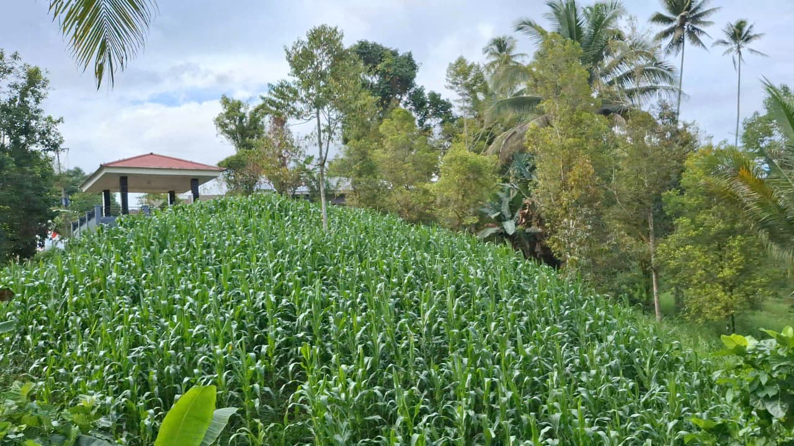
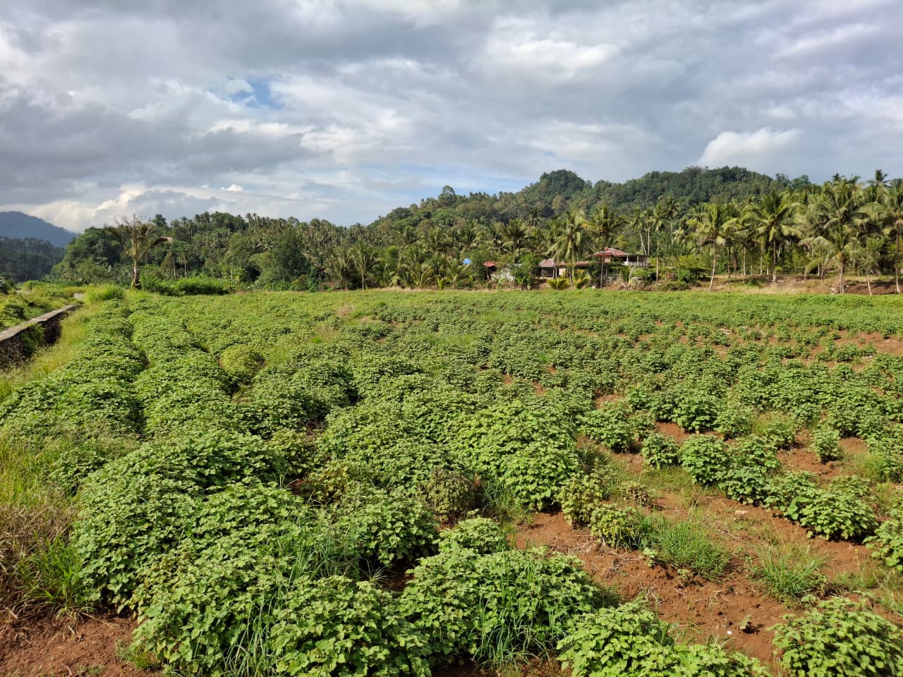
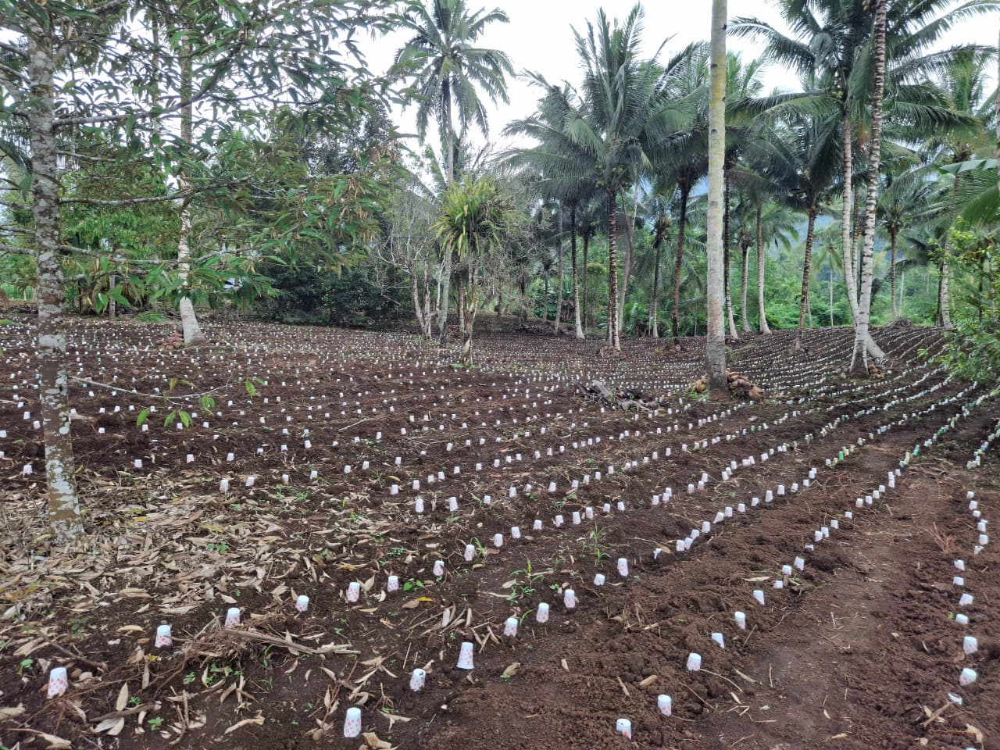

Sektor Unggulan
Pertanian Desa
Pertanian adalah tulang punggung Desa Kinalawiran. Nilam menjadi bintang utama karena menghasilkan minyak atsiri bernilai ekspor tinggi. Cengkeh (190 Ha, 202 keluarga), kelapa, jagung, dan durian melengkapi kekayaan hasil bumi desa ini.
Hasil Bumi Desa
⭐ Unggulan Utama
Nilam
Tanaman unggulan Kinalawiran. Daunnya disuling menjadi minyak atsiri berkualitas ekspor. Tumbuh subur di iklim tropis lembab khas Minahasa Selatan.
Ekspor Utama
Cengkeh
190 Ha milik 202 keluarga petani. Dipasarkan lewat KUD, pengecer, hingga langsung ke konsumen.
Perkebunan
Kelapa
Tumbuh subur di seluruh wilayah desa. Hasilnya berupa kopra dan minyak kelapa, menjadi pendapatan stabil bagi banyak keluarga.
Perkebunan
Jagung
Dibudidayakan di lahan tegalan seluas ±180 Ha. Jadi sumber pangan sekaligus pakan ternak warga desa.
Pangan
Durian
Luas tanam 17 Ha. Durian lokal Kinalawiran diminati pasar regional dan punya potensi besar untuk dikembangkan lebih lanjut.
Hortikultura